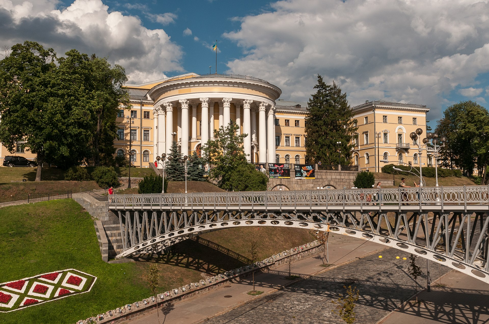

Жовтневий палац
Історія
Київський інститут шляхетних дівчат
Будівлю було зведено як корпус Київського інституту шляхетних дівчат, яким він і був до 1917 року.
Місце репресій
Після захоплення Києва в 1918 році, інститут перетворився на різноманітні державні установи Згодом у будівлі розмістилися караульні полки, Вища військова та сільськогосподарська школи, інститут шкіряної промисловості, редакція журналу «Більшовиченята», протягом майже десяти років тут містився Комітет комунального господарства. Зі спогадів О. О. Гольденвейзера: «Разумеется, и 26 января, когда стихла канонада и в город вступили большевики, и в последующие дни нам было не до спокойных наблюдений и параллелей. Эти первые дни были полны ужаса и крови. Большевики производили систематическое избиение всех, кто имел какую-либо связь с украинской армией, и особенно с офицерством. Произведенная незадолго пред тем регистрация офицеров имела в этом отношении роковые последствия: многие предъявляли большевикам свои регистрационные карточки, и это вело к неминуемой гибели. Солдаты и матросы, увешанные пулеметными лентами и ручными гранатами, ходили из дома в дом, производили обыски и уводили военных. Во дворце, где расположился штаб, происходил краткий суд и тут же, в царском саду, — расправа. Тысячи молодых офицеров погибли в эти дни. Погибло также много военных врачей — между ними известный в городе хирург Бочаров, который ехал на своей пролетке в госпиталь и показал остановившему его солдату свою регистрационную карточку. Та же участь постигла доктора Рахлиса, недавно только возвратившегося из австрийского плена и схваченного таким же образом, когда он стоял на улице в какой-то очереди.» Після того, як Київ знову став столицею в 1934 році й до 1941, в будівлі діяло управління Народного комісаріату внутрішніх справ (НКВС) УРСР. Підвали було перетворено на камери допитів. Тут катували таких людей, як Володимир Сосюра, Гнат Юра, Максим Рильський, Андрій Малишко, Григорій Косинка. Відомі діячі, розстріляні у Жовтневому палаці: Григорій Косинка, Микола Івасюк, Тарас Крушельницький і Іван Крушельницький, Майк Йогансен , Михайль Семенко. Тіла жертв таємно вивозили на околиці Києва до Биківнянського лісу. В 1941 році сад постраждав від вогню під час пожежі, що утоврилася після підриву радянськмм військами історичного центру міста, але в самих підвалах міни не були закладені, тому будинок вцілів. З 1941 приміщення використовувалися німецькою армією, як будівля гестапо — таємна поліція Третього Рейху. В 1943 палац був бомбардуваний при звільненні Києва радянською армією внаслідок чого зазнав значної руйнації.
Реконструкція та сьогодення
Реконструкція почалася 1952 році й продовжувалась до 1958. Під час реконструкції будинку в 1950-х рр. були знайдені обгорілі людські кістки та таємні камери для катувань.[5] Над відбудовою, разом з тисячами робітників, студентів та людей різних професій, працювали і видатні діячі культури та мистецтва: Максим Рильський, Володимир Сосюра, Андрій Малишко, Лев Ревуцький, Авмросій Бучма, Наталія Ужвій, Гнат Юра та багато інших; плафони розписував Анатолій Чернов. 24 грудня 1957 року Жовтневий палац культури відчинив двері для відвідувачів. Відтоді понад 40 мільйонів осіб побували на різноманітних культурно-мистецьких заходах палацу. У численних гуртках художньої самодіяльності, народних ансамблях, любительських об'єднаннях та клубах починали свою творчу діяльність нині відомі майстри сцени: Дмитро Гнатюк, Анатолій Солов'яненко, Белла Руденко, Анатолій Мокренко, Юрій Гуляєв, Діана Петриненко, Степан Турчак та багато інших. У будівлі діяла Народна оперна студія, яка існувала понад 53 роки, та виховала багато видатних виконавців.
Діяльність
Міжнародним центром культури і мистецтв проводяться традиційні огляди, конкурси, фестивалі. На його сцені працюють професійні та самодіяльні театральні та концертні колективи з Росії, Білорусі, Молдови, Грузії, Литви, Естонії та інших країн. В жовтневому палаці проводяться зустрічі з відомими письменниками, композиторами, представниками дипломатичних кіл, державними та громадськими діячами, народними депутатами. Бібліотека центру має унікальний фонд, що налічує понад 70 тисяч екземплярів.
Художня самодіяльність
За часів незалежної України у Центрі діють такі Самодіяльні колективи : народний ансамбль народного танцю — «Горлиця» Народний оркестр народних інструментів Народна вокальна студія Народна оперна студія Народний ансамбль класичного балету «Просвіт» Дитячі зразкові колективи «Вітерець», «Співаночка». Виступає естрадно-джазовий оркестр «Музична лабораторія». 8 колективам надано звання «Народний» та «Зразковий». Аматори центру здобули успіх не лише в Україні, а й далеко за її межами — в Італії, Франції, Німеччині, Фінляндії, Канаді, Португалії, Японії, США, Польщі, Угорщині тощо.
назад